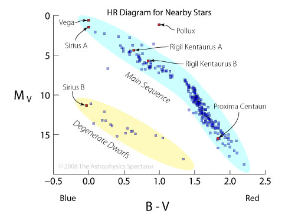

Sirius Star
fun facts
Distance to Earth: 8.611 light years
two times biger then the sun
it is moving closer to ther solar system
rest of info
It is a white dwarf
17,000 degrees F
white
25.4 brigthness
constellation Canis Major the Greater Dog
